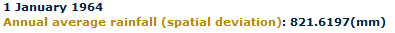
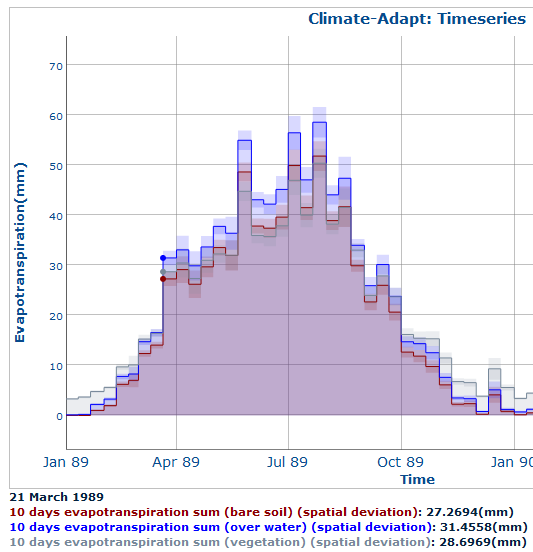

The timeseries is interactive: move the mouse over each point to read eahc corresponding date/value into the legend

Example of graph with multiple datasets:


Click-and-drag with the mouse to zoom over a specific area in both directions:

Double click over the graph to return to the original size.